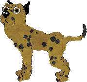

I played a lot of weird PC games as a kid, and still play some of them. I will dedicate this area to those games.
I almost can't believe this happened! It's April 2025 and the new season of Black Mirror is out. I watched up to episode four, 'Plaything,' and can't get this out of my mind.
The episode involves a PC game in which the player cares for little alien-looking things that are touted as artificial life. They can learn and 'think' for themselves, and the player's goal is to care for them and hope they reproduce for many generations.
My immediate thought was how similar this concept is to the game Creatures, a 1996 life simulation. I received Creatures as a gift when I was eight years old, and the box very much tried to sell me on the idea that the subjects of the game were truly alive in some way. Seriously: Everything on the box was 'really alive' this and 'greatest artificial life experiment in the world' that. You can still watch the game's original tutorial that says something like that.
I was obsessed with the game for a while and still play it nowadays. You can get it for pretty cheap on GOG or Steam and it easily runs on most systems. But I'm confused why there hasn't really been anything like it released ever since. There have been similar ideas around 'living' things on the computer like Petz, Spore, The Sims, etc. But I don't think any of those games use a neural network as effectively as Creatures did. Yes--the game is an early example of a simple neural network. The aliens in the game, called Norns, learn through trial-and-error how to do things that are good, like eat, and how to avoid things that cause pain, like touching fire. Some of them are better at it than others, but as the player you can encourage or discourage them from doing things.
You can teach the Norns how to speak in a rudimentary language and then communicate with them by typing short sentences like 'get food,' but they often don't listen. Or maybe that's just my experience; I've never been a remarkably assertive person. But one of the coolest parts of the language-learning mechanic is that Norns can also learn from each other, so if you teach your adult Norn a bunch of words then let it play with a child who hasn't been taught anything, the child can learn words from the adult. Or... the adult might instead pick up on the child's babble, and you have to re-teach your adult lest it start asking for 'oogh' instead of 'food.'
Anyway, you'll never believe this but apparently Charlie Brooker, writer of Black Mirror, was a reviewer and fan of Creatures before moving on to writing TV shows. A Redditor tracked down Charlie's 1996 review in PC Zone. I'm thrilled and amazed that a writer of a show I love was such a fan of a game I love, and even more amazed that the game inspired a whole episode of the show! I hope this will bring Creatures back into the spotlight so others can appreciate how cool it is, and maybe it will be revitalized in some way.
Here's a weird one for you, and you will most likely see a trend in the types of games I enjoy as this list goes along. But hear me out: This game involved watching a dolphin/bird hybrid creature on what was advertised as a camera on another planet. I'm not kidding. Please read more about it here.
But if you want to hear my take on it, it was literally magic as a child and is incredibly boring as an adult. From what I've read about it, a lot of effort went into making the graphics look real, and by golly did I believe that shit was real when I was eight or nine years old. Now it looks a bit pixelly. Side note: You can find the game online nowadays but last time I tried it was difficult to install and required use of a virtual machine running Windows 95 because it will not run on Windows 10 or above.
As far as game play, you basically watch this dolphin bird as it perches on a tree. His name is Fin Fin and he occasionally does interesting things at random. He might sing a song, flap his wings, or fly off to a different location that you can follow him to using a really cool-looking map. Like seriously, the graphics and sounds in this game were beyond enchanting when I was a kid. I'll never forget the first time I played the game on my best friend's computer during a sleepover. It was what felt like incredibly late at night when we booted it up and we probably did not sleep because my friend was fortunate enough to have a giant old desktop PC in her bedroom upstairs and we did nothing but watch that damn dolphin bird all night.
When I played Fin Fin as an adult, it was underwhelming. You watch and wait for him to do stuff. Sometimes he does, sometimes he doesn't. If anything the cooler part is that occasional other creatures will pop up on the screen, like insects or floaty jellyfish things or other birds. You can also feed Fin Fin but I've never had much luck with that. The other part I forgot to mention is that, in a thing that was totally cool at the time but never seems to have taken off and made it to today, you could 'talk' to Fin Fin using a microphone. Even as a kid, I lost interest in this pretty quick because you can talk into the microphone all you want and Fin Fin doesn't respond unless you make an incredibly loud noise, which actually upsets him. I remember being nearly traumatized the first time I made a too-loud noise and Fin Fin shrieked, took flight, and disappeared into the woods.
Overall though this game is a really cool concept and yet another artifical-life type thing from my childhood that I don't understand why it hasn't been reborn today but with better technology. Nowadays I watch a bald eagle nest via livestream on YouTube and basically feel like I am playing adult Fin Fin.
Description in progress

(Image from an in-game screenshot)
I first played Dogz on my friend's computer and fell in love. It's just a cute little pixelated dog that you adopt (after choosing from I think five breed options) and it runs around on your desktop. You can give the dog treats, toys, and pets, and it responds to you. I begged my parents for this game of course, but my dad went all out and got me Dogz 3, which I had not known existed.
What an upgrade! In Dogz 3, you can adopt multiple computer doggos and bring them to various places like the garden, beach, and living room. You get a whole closet full of toys and clothes for them. The dogs start as puppies and grow up, and when they are adults you can breed them so they have cute little puppies with mixed physical characteristics from their parents! You can't get much cuter than that, and you definitely can't get more of a perfect game for eight-year-old me.
Another really cool thing about this game is the online community it formed. A lot of players of the game, including me, created their own little websites dedicated to their Dogz (and Catz, which was the same game but with cats) family. People got really creative with it and started making their own toys, clothes, and breeds of animals for the game, and making them available for download on their websites. Even dog and cat shows started cropping up, with sets of rules for each type of show, similar to the real-life American Kennel Club and the like. If you poke around on certain corners of the internet, you can still find websites like this.
I admit it. In addition to being weirdly obsessed with pet related computer games, I was also a horse girl. I rode horses as a hobby and damn was it cool.
But Riding Star was pretty cool as far as horse games go. You probably have not scoured the web for an actually good horse game, but I have, and I can tell you that most horse video games are absolute garbage. Either the horse looks like a maniac or the human looks like a maniac or both, and you either need to painfully walk slowly through every interaction in the game as they try to make it as realistic as possible, or all you get to do is like run around in a field or something. Seriously: If you find a good horse game, first tell me about it and then cherish that game forever because it's probably not real.
Back to the actual game. You play as a young woman caring for a horse named Star, and it's fairly relaxing and even a little engaging to poke around the stables, groom your horse, clean the stall and make sure there's food and water, and even let your horse out into the pasture for a while. However you care for your horse will impact his overall health and subsequently his ability to compete, which is the slightly more engaging part of the game. Using your keyboard and an interesting perspective that I forget the name of, you can take your horse to competitions in dressage, show jumping, and cross country. The way these competitions work are actually pretty fun and bonus points for the cheeky British sports announcer who can only say a handful of unique phrases but adds a nice touch. There's also a fun multiplayer mode that lets you select different horses and I'm still serious when I say this game does horse competitions eight-hundred-times better than any other horse game I've ever played. And I've played a lot of horse games, including Barbie Riding Club. There will not be a section on this page for Barbie Riding Club.
When I talk about Sim Farm, I am talking about the 1993 MS-DOS edition and not anything that came after.
I loved this game but remember it being very unforgiving, as in you would start the game with absolutely no tutorial, start building up your farm by planting crops, buying equipment like tractors, installing complex irrigation systems and whatnot, only to receive an error along the lines of, 'Your irrigation pump is too close to the water source,' or 'Your tractors need roads to get to your crops," and so, because you'd already spent all your money on everything you'd just built, your only choice was to sell everything and start all over again. It sucked.
But I do have some memories of enjoying the game. Apparently I got far enough to raise animals and enter them into competitions at the fair, and the game played some really fun music when the fair was in town. That was probably my favorite part.
This game is a classic and continues to be popular in its more recent versions. I always stick to the original. Instead of going on about it, I'll just provide some of my favorite quotes from the game: